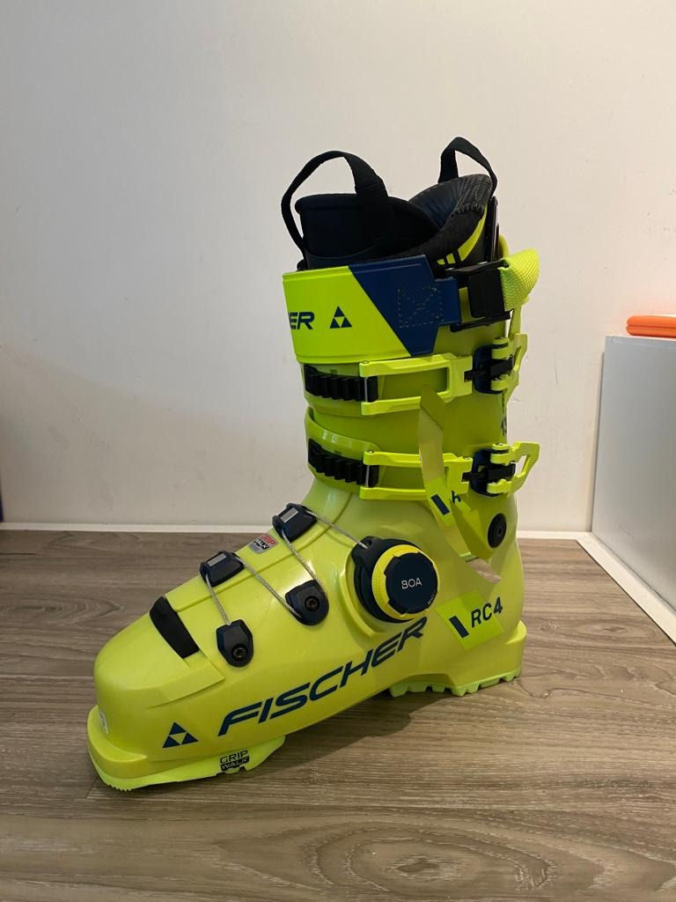

BOA sluiting als vervanging van de schnallen?
De meest gestelde vraag: hoe strak moet ik m'n skischoen doen, gaat veranderen… Toegegeven, de moderne skischoen is de afgelopen decennia wezenlijk niet veel veranderd. Goed, we kregen GripWalk, het…
Reacties uitgeschakeld voor BOA sluiting als vervanging van de schnallen?